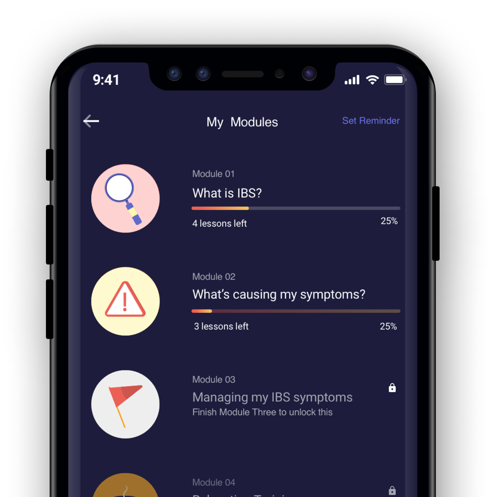
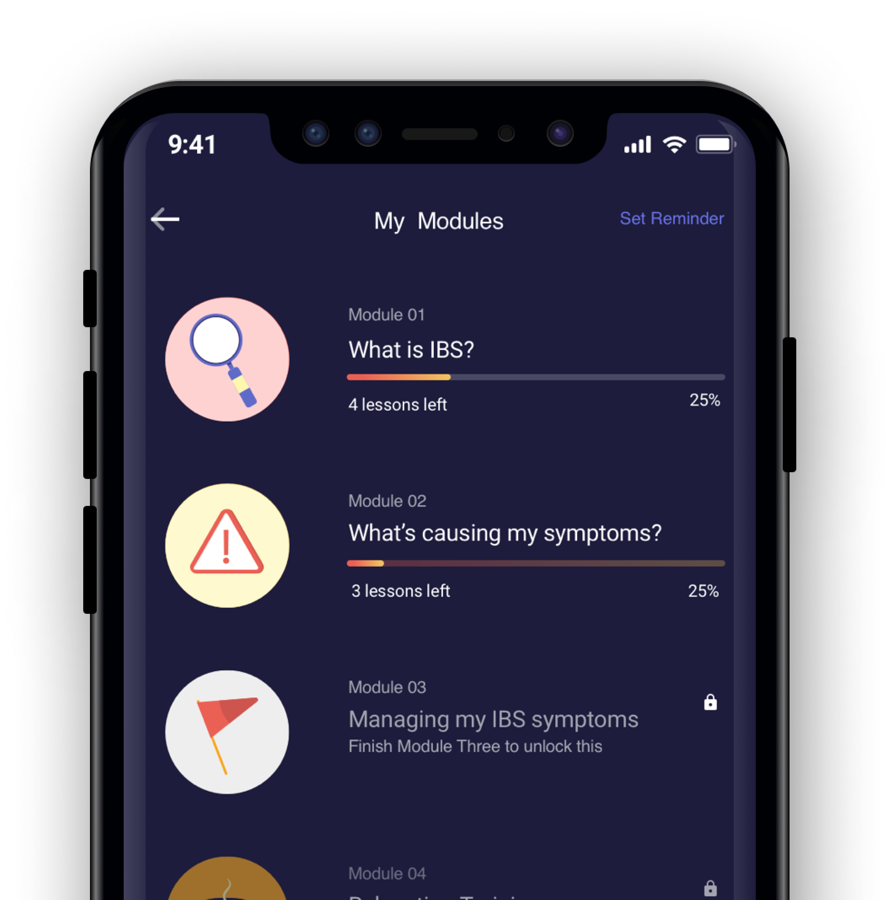

SCIENCE
Zemedy uses cognitive behavioural therapy to help reduce your flare ups
Cognitive Behavioural Therapy
Negative emotions are hard to change &
that can make your IBS worse
But with the help of CBT, you can target difficult emotions like stress and anxiety with clever cognitive techniques. Practicing these techniques is what sets CBT apart from other talking therapies - it's a 'doing' therapy as well.
CBT builds a set of skills that helps you
Identify how situations, thoughts, and behaviours influence emotions
Become aware of thoughts and emotions
Improve feelings by changing dysfunctional thoughts and behaviours
Why CBT for IBS?
It’s a treatment you’ve probably heard of (or gone through) for anxiety and depression. Luckily, doctors and researchers have found that it’s also effective for IBS, even more so than diet and medication!
The Vicious Cycle
Our flare ups are often triggered by stress and anxiety, and then getting stressed or anxious about the condition in the first place can cause even more symptoms, what therapists call a ‘vicious cycle’.
The NHS provides this treatment but availability is limited, waiting lists are long and referrals can take months. That's why we created Zemedy.
Brain-Gut axis
Ever been told to “go with your gut” or
felt nervous “butterflies”?
You’re probably getting signals from your “gut brain”! Hidden in the walls of the digestive system, this brain in your gut has 500 million neurons. The link between digestion, mood, health is very deep and contributes to IBS.
The gut-brain axis major players
Microbiome
The gut microbiome is made up of bacteria, fungi & viruses that live in the gut
Neurotransmitters
Neurotransmitters are chemicals used by the brain and gut to ‘talk’ to each other
Seritonin
The “happy” hormone! It’s vital in regulating mood, sleep and healing
The Vagus Nerve
This chunky nerve connects your gut and brain, sending signals in both directions


Zemedy Studies
We’re currently testing Zemedy to ensure efficacy and ease of use at renowned institutions in the United States and Europe.
Acceptability and Efficacy of Zemedy App for IBS
Principal Investigator:
Melissa Hunt, Ph.D.
University of Pennsylvania
Office: 215-898-6478
e-mail: mhunt@psych.upenn.edu
Testing Zemedy App for IBS
Principal Investigator:
Professor Claudia Witt
Charité – Universitätsmedizin Berlin
Charitépl. 1, 10117 Berlin, Germany
References
The technical science bit
Digital Therapeutics: An Integral Component of Digital
Innovation in Drug Development
Oleksandr Sverdlov, Joris van Dam et al.
Clinical Pharmacology and Therapeutics (2018)
Could digital therapeutics be a game changer in psychiatry?
Chul Hyun Cho, Heon Jeong Lee
Psychiatry Investigation (2019)
Irritable bowel syndrome treatment: Cognitive behavioral therapy versus medical treatment Majid Mahvi-Shirazi, Ali Fathi-Ashtiani et al. Archives of Medical Science (2012)
Brief cognitive-behavioral internet therapy for irritable bowel syndrome Melissa G. Hunt, Samantha Moshier et al. Behaviour Research and Therapy (2009)
Improvement in Gastrointestinal Symptoms After Cognitive Behavior Therapy for Refractory Irritable Bowel Syndrome. Jeffrey M Lackner, James Jaccard et al. Gastroenterology (2018)
That gut feeling Siri Carpenter American Psychological Association (2012)
Effects of Serotonin and Slow-Release 5-Hydroxytryptophan on Gastrointestinal Motility in a Mouse Model of Depression Narek Israelyan, Andrew Del Colle et al. Gastroenterology (2019)
References
The technical science bit
Digital Therapeutics: An Integral Component of Digital
Innovation in Drug Development
Oleksandr Sverdlov, Joris van Dam et al.
Clinical Pharmacology and Therapeutics (2018)
Could digital therapeutics be a game changer in psychiatry?
Chul Hyun Cho, Heon Jeong Lee
Psychiatry Investigation (2019)
Irritable bowel syndrome treatment: Cognitive behavioral therapy versus medical treatment Majid Mahvi-Shirazi, Ali Fathi-Ashtiani et al. Archives of Medical Science (2012)
Brief cognitive-behavioral internet therapy for irritable bowel syndrome Melissa G. Hunt, Samantha Moshier et al. Behaviour Research and Therapy (2009)
Improvement in Gastrointestinal Symptoms After Cognitive Behavior Therapy for Refractory Irritable Bowel Syndrome. Jeffrey M Lackner, James Jaccard et al. Gastroenterology (2018)
That gut feeling Siri Carpenter American Psychological Association (2012)
Effects of Serotonin and Slow-Release 5-Hydroxytryptophan on Gastrointestinal Motility in a Mouse Model of Depression Narek Israelyan, Andrew Del Colle et al. Gastroenterology (2019)
Zemedy. The smart little app that helps you take control of your gut health.


 
